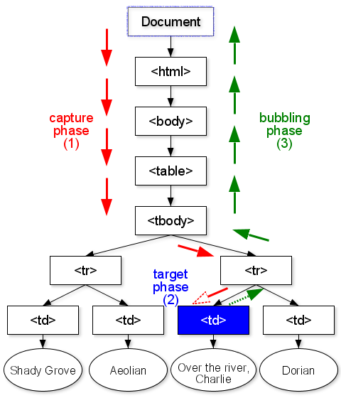

Event handlers may be attached to various elements in the DOM. When an event occurs, an event object is dynamically created, and passed sequentially to the event listeners that are allowed to handle the event. The DOM Event interface is then accessible within the handler function, via the event object passed as the first (and the only) argument.
Applications may dispatch event objects using the EventTarget.dispatchEvent() method, and implementations must dispatch event objects as if through this method. The behavior of this method depends on the event flow associated with the underlying object. An event flow describes how event objects propagate through a data structure. As an example, when an event object is dispatched to an element in an XML document, the object propagates through parts of the document.
| Interface | Description | |
|---|---|---|
| DocumentEvent DOM 2 Events | The DocumentEvent interface provides a mechanism by which the user can create an Event object of a type supported by the implementation. | |
| DocumentEventGroup DOM 3 Events | The DocumentEventGroup interface provides a mechanism by which the user can create an EventGroup of a type supported by the implementation. | |
| EventException DOM 2 Events | Event operations may throw an EventException as specified in their method descriptions. | |
| EventGroup DOM 3 Events | The EventGroup interface functions primarily as a placeholder for separating the event flows when there are multiple groups of listeners for a DOM tree. | |
| EventListener DOM 2 Events | The EventListener interface is the primary way for handling events. | |
| EventTarget DOM 2 Events | The EventTarget interface is implemented by all the objects which could be event targets in an implementation which supports an event flow. | |
| EventTargetGroup DOM 3 Events | The EventTargetGroup interface is implemented by the same set of objects that implement the EventTarget interface, namely all EventTargets in in implementation which supports the Event model and the EventGroup extension. |
| Class | Description | |
|---|---|---|
| CustomEvent DOM 3 Events | The CustomEvent interface is the recommended interface for application-specific event types. | |
| Event DOM 2 Events | The Event interface is used to provide contextual information about an event to the listener processing the event. | |
| EventExceptionCode DOM 2 Events | An integer indicating the type of error generated. | |
| KeyboardEvent DOM 3 Events | The KeyboardEvent interface provides specific contextual information associated with keyboard devices. | |
| KeyEvent DOM 3 Events | The KeyEvent interface provides specific contextual information associated with Key Events. | |
| MessageEvent HTML 5 | Messages in server-sent events, Web sockets, cross-document messaging, and channel messaging use the message event. | |
| MouseEvent DOM 2 Events | The MouseEvent interface provides specific contextual information associated with Mouse events. | |
| MouseMultiWheelEvent DOM 3 Events | The MouseMultiWheelEvent interface provides specific contextual information associated with mouse multi wheel events. | |
| MouseWheelEvent DOM 3 Events | The MouseWheelEvent interface provides specific contextual information associated with mouse wheel events. | |
| MutationEvent DOM 2 Events | The MutationEvent interface provides specific contextual information associated with Mutation events. | |
| MutationNameEvent DOM 3 Events | The MutationNameEvent interface provides specific contextual information associated with Mutation name event types. | |
| TextEvent DOM 3 Events | The TextEvent interface provides specific contextual information associated with Text Events. | |
| UIEvent DOM 2 Events | The UIEvent interface provides specific contextual information associated with User Interface events. |